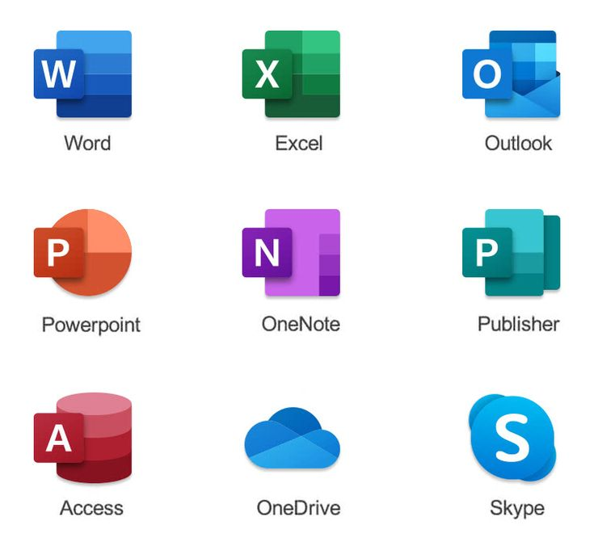
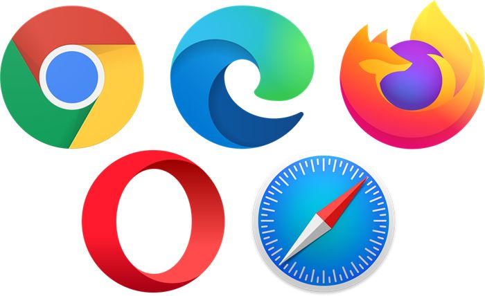
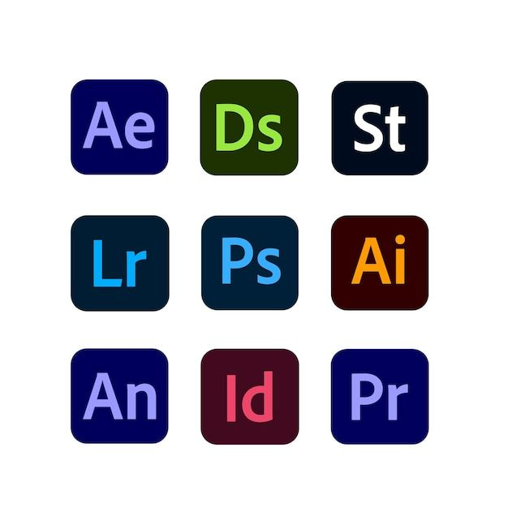
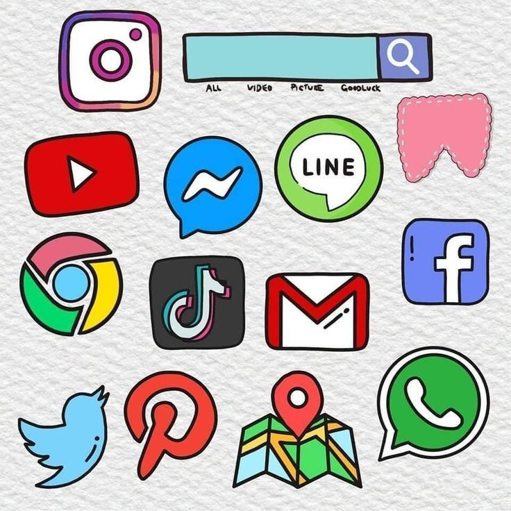
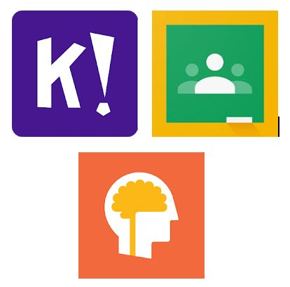
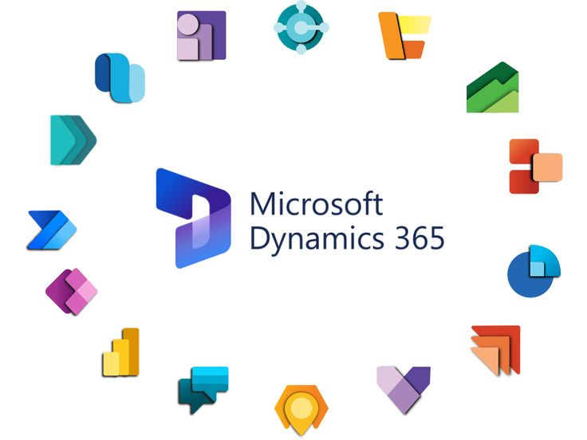

Computer Software Overview
Software refers to the programs and instructions that tell a computer how to perform specific tasks. Unlike hardware, software cannot be physically touched.
Key Software Categories:
- Operating Systems: Manage computer hardware and provide a platform for applications.
- Application Software: Programs designed to help users perform specific tasks.
- Utility Software: Helps maintain, protect, and optimize computer performance.
- Programming Software: Tools used to create, test, and develop computer programs.
Operating Systems
An operating system (OS) is system software that manages computer hardware and software resources. It allows users to interact with their devices and run applications.
Windows
A widely used operating system developed by Microsoft. It supports various applications, games, and productivity tools.
Linux
An open-source operating system known for its flexibility, security, and use in servers and development environments.
macOS
Apple's operating system designed for Mac computers, known for its integration with Apple devices.
Application Software
Application software consists of programs that allow users to accomplish specific tasks, such as creating documents, browsing the internet, editing images, and communicating.

Productivity Software
Create documents, spreadsheets, and presentations using digital productivity tools.
Learn More
Definition: Programs that help users create, organize, and manage information.
Purpose: Improve efficiency when completing school, office, and personal tasks.
Examples: Microsoft Word, Excel, and PowerPoint.
Origin: Developed alongside personal computers. Microsoft Word was first released in 1983.

Web Browsers
Access websites, search for information, and explore different resources on the internet.
Learn More
Definition: Applications used to access and display websites.
Purpose: Allow users to browse the internet and use online services.
Examples: Google Chrome, Mozilla Firefox, and Microsoft Edge.
Origin: The first web browser, WorldWideWeb, was developed by Tim Berners-Lee in 1990.

Graphics Software
Create and edit digital images, illustrations, photographs, and visual designs.
Learn More
Definition: Programs used to create, edit, and manipulate digital graphics.
Purpose: Help users produce digital artwork, advertisements, and designs.
Examples: Adobe Photoshop, Canva, and Adobe Illustrator.
Origin: Digital graphics programs developed as computers gained the ability to process images. Adobe Photoshop was released in 1990.
Multimedia Software
Play, create, and edit audio and video files for entertainment and creative projects.
Learn More
Definition: Applications that manage and process audio and video content.
Purpose: Allow users to watch videos, listen to music, and edit multimedia projects.
Examples: VLC Media Player and video editing applications.
Origin: Multimedia software expanded with the development of digital audio and video technologies.

Communication Software
Connect with other people through messaging, voice calls, and video conferences.
Learn More
Definition: Programs that allow users to exchange messages and information digitally.
Purpose: Support online communication, collaboration, and remote meetings.
Examples: Zoom, Microsoft Teams, and Discord.
Origin: Developed alongside computer networking and early electronic messaging systems.

Educational Software
Support teaching and learning through digital lessons, quizzes, and interactive activities.
Learn More
Definition: Programs designed to support education, training, and learning.
Purpose: Help students learn through digital lessons, tutorials, and activities.
Examples: Duolingo, Google Classroom, and educational applications.
Origin: Early computer-assisted learning systems included PLATO, which began development in 1960.

Business Software
Manage business activities, financial records, inventory, and organizational operations.
Learn More
Definition: Programs designed to support business operations and management.
Purpose: Help organizations manage accounting, sales, records, and inventory.
Examples: QuickBooks, SAP, and Microsoft Dynamics.
Origin: Business software expanded with the introduction of personal computers and office computing applications.
Multimedia Software
Allows users to play, create, and edit audio and video files. Examples include VLC Media Player and video editing applications.
Communication Software
Helps people communicate through messaging, voice calls, and video conferences. Examples include Zoom and Microsoft Teams.
Educational Software
Supports teaching and learning through digital lessons, interactive activities, and educational programs.
System Software vs. Application Software
Computer software can be divided into two major types based on their purpose and functions.
System Software
Manages computer hardware and provides the environment needed for other software to operate. Examples include operating systems and device drivers.
Application Software
Helps users perform specific activities and tasks. Examples include word processors, web browsers, and games.